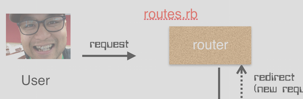
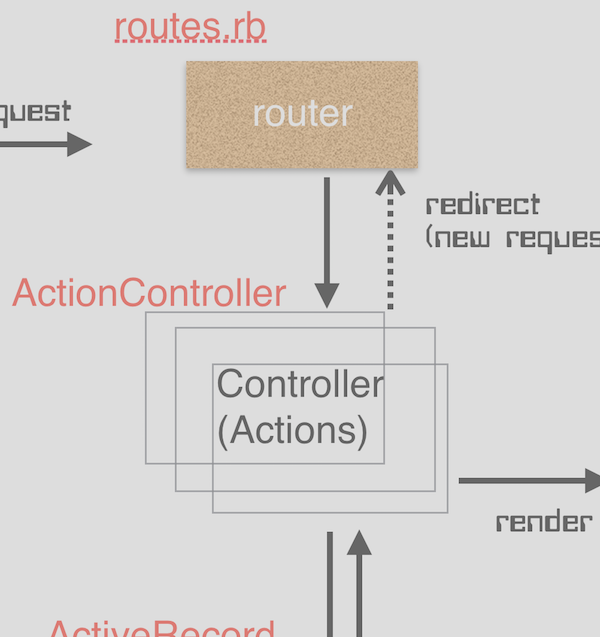
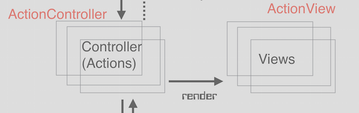
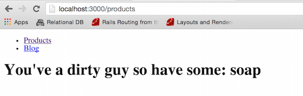
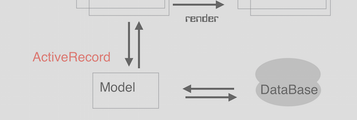
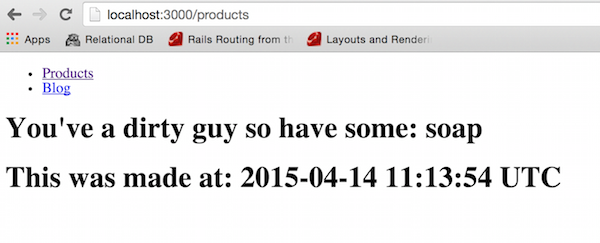

Beginners Guide to Understanding Rails
< 6 Jul 2015>
Here we will look at concepts from Course 2 of Lesson 1 with TeaLeaf
I’ve created this tutorial to quickly create/edit files and see how this affected the application. This is meant to walk through a simple Request from a User and a Response from the App.
Major Topics include:
- Rails template intro
- Routes
- ActionController
- Views and the
rendermethod - Models
1. RAILS TEMPLATE INTRO: Wow, Let’s Get Into It.
Starting from the very beginning, it’s a very good place to start. I’m running on a Mac with Yosemite OS X, if you’re reading this to learn Rails, I HIGHLY recommend that you run the code to make the information more tactile. Commands will be from the “Terminal” application, Rails version “4.1.6”
Assuming you have all the installations, when starting a Rails app, the first call is usually:
$ rails new APPNAME
and this would give you a default file set as follows if we executed:
$ rails new coolness
$ cd coolness
|-- app
| |-- assets
| |-- images
| |-- javascripts
| `-- stylesheets
| |-- controllers
| |-- helpers
| |-- mailers
| |-- models
| `-- views
| `-- layouts
|-- config
| |-- environments
| |-- initializers
| `-- locales
|-- db
|-- doc
|-- lib
| `-- tasks
|-- log
|-- public
|-- script
|-- test
| |-- fixtures
| |-- functional
| |-- integration
| |-- performance
| `-- unit
|-- tmp
| |-- cache
| |-- pids
| |-- sessions
| `-- sockets
`-- vendor
|-- assets
`-- stylesheets
`-- plugins
Figure A: File structure of new Rails Application
READMORE
Oh boy, that’s a lot of stuff, but to help focus your attention, here is something that will help simplify the process. We’ll go over an overview of a “request” and then examine specific files from the file structure. Overall, we’ll mainly focus on:
config/routes.rbapp/controllersapp/viewsapp/modelsdb/
Other files will be looked at later… still haven’t really learned about ‘em yet. :)
PRACTICE: check the files and folders above, and see if you can locate them in the folder tree, Figure A.
(Starting Rails doesn’t require knowing every file… cool huh?)
VISUAL PNEUMONIC
Figure B: Image of MVC app with Rails (ripped off from TeaLeaf Course material. :))
This (Figure B) my friends is a picture that will help explain the mechanics of a Model, View, Controller (MVC) on a Rails application.
General Overview: Request and Response
Request
We’ll start at the top left, the “User” makes a request to the server and we can look at routes.rb to see how it’s handled.
Response
From routes, the request triggers a “Controller Action” and from there the “Model” Layer may or may not get data from the “DataBase”. Information is then assembled and finally a “View” is returned for the User.
I know there are a lot of files in a Rails template, but as we examine the mechanics of how the internet works (through this Request and Response) the Rails parts and conventions will be more clear.
2. ROUTES
// file path to consider:
// coolness/config/routes.rb

Figure C: Looking at the routes portion of the Visual Pneumonic
“Everyone” knows that a http browser request consists of a Verb a URL addess and possibly parameters
The routes.rb file helps link the request with a specific “Controller” and “Action”
For example, the routes.rb file can look as follows:
// coolness/config/routes.rb
Rails.application.routes.draw do
get 'products/:id' => 'products#view'
end
Figure D: Basic routes.rb file.
With the following file, a GET request to the path products/4 would map to the products controller and the view action. Also, parameters would be available with the params[:id] method in this view action.
I know what you’re thinking,
“Jason, if we want RESTful routes we’ll need more then
get 'products/:id' => 'product#view'. What about all the CRUD operations: Create, Read, Update, Destroy? What the ef man?!”
For a complete restful route of a “product” controller, the routes file would look something like this.
Reminder… actually type up this information on you late model Mac Book Pro for optimal awesomeness!!!
// coolness/config/routes.rb
Rails.application.routes.draw do
get '/products' => 'products#index'
post '/products/' => 'products#create'
get '/products/new' => 'products#new'
get '/products/:id/edit' => 'products#edit'
get '/products/:id' => 'products#show'
patch '/products/:id' => 'products#update'
put '/products/:id' => 'products#update'
delete '/products/:id' => 'products#destroy'
end
Figure E: Getting all CRUDy with routes.rb
Looking at $ rake routes from the terminal we’ll get more information on what we are working on and the conventions of Rails.
$ rake routes
Prefix Verb URI Pattern Controller#Action
products GET /products(.:format) products#index
POST /products(.:format) products#create
products_new GET /products/new(.:format) products#new
GET /products/:id/edit(.:format) products#edit
GET /products/:id(.:format) products#show
PATCH /products/:id(.:format) products#update
PUT /products/:id(.:format) products#update
DELETE /products/:id(.:format) products#destroy
Starting from the left, we’ll see that Rails actually gives us helper methods products and products_new to do things like access the path to these URIs (ie. products_path). On the right, we have a collection of more complete actions to get the full CRUD functions for persistent storage.
Since this is a staple in Rails development, all this can be shortened:
Rails.application.routes.draw do
resources :products
end
With that one line of code we get all that stuff we listed out from Figure E. To prove my point, let’s look at $ rake routes
$ rake routes
Prefix Verb URI Pattern Controller#Action
product_index GET /products(.:format) products#index
POST /products(.:format) products#create
new_product GET /products/new(.:format) products#new
edit_product GET /products/:id/edit(.:format) products#edit
product GET /products/:id(.:format) products#show
PATCH /products/:id(.:format) products#update
PUT /products/:id(.:format) products#update
DELETE /products/:id(.:format) products#destroy
We can see that we get basically the same Controller Actions and even more helper methods!
Whew!!! That was a mouthful. Routes are a great way to peer into the inner workings of a Rails app and there’s a lot more to learn. This is enough for us to move on through the next portion of the Visual Pneumonic… ActionController. A Request has been made and now the Coolness App will Respond accordingly.
Other routes features are possible though like: nesting, and direct declaration between URI and action.
For more information on routes checkout the guides
3. ACTIONCONTROLLER
// file paths to consider
// coolness/app/controllers/

Figure F: ActionController portion of the Visual Pneumonic
So, now that we have an routes correctly directed, how do we work with the Controller#Actions?
Again, the conventions need to be followed here and if we want to have a Products Controller, we’re going to need a have a products_controller.rb file in the coolness/app/controllers/ folder of the application. Generally, the convention is #{Controller_Name_Plural}_controller.rb
For the “Actions”, we can look inside the controller folder and write the following file:
// coolness/app/controllers/products_controller.rb
class ProductsController < ApplicationController
def index
@product = "soap"
end
def show
end
def new
end
def create
end
def edit
end
def update
end
end
Right now, our application doesn’t do anything except go from the router to the Controller so we’ll move on with a dummy product @product = "soap". By convention, the next step would involve displaying a view if the “Model” layer isn’t accessed.
4. VIEW AND THE render METHOD
// file path to consider
// coolness/app/views/

Figure G: Looking at the views portion of the Visual Pneumonic
Now, we’ve moved from the User to the “Router” and then the “Controller” so we can now see a “View” and essentially “Respond” to the User.
To work with a “View”, the Rails convention is:
app/view/${Controller_plural}/#{action}.html.erb
So, given that we have our dummy “soap” data, if we wanted to see it, we would create the following file in the coolness/app/views/products/ folder.
// coolness/app/views/products/index.html.erb
<h1>You've a dirty guy so have some: <%= @product %></h1>
This would give us an entire loop from the User to the Coolness Application and back to the User. Since this completes one Request Response loop, lets fire up the server ($ rails server) and see what we got here.
Thinking about the rake routes, we want to access the Index action and view from the Products controller. The GET verb is being implied here, the URI would then be:
http://localhost:3000/products
and the Response:
Figure H: Response from ‘Coolness’ app
Hoozzaaahh!!!
and now the render method
In our view, lets say we wanted to utilize partials for a nav bar like follows:
<header>
<ul>
<li>
<%= link_to "Products", products_path %>
</li>
<li>
<%= link_to "Blog", blog_path %>
</li>
</ul>
</header>
Learn about the link_to method in the documents
We can save the code above in a partial had use render to copy it into our views if we wanted.
// we're saving the code here
// app/views/partials/_nav.html.erb
<header>
<ul>
<li>
<%= link_to "Products", products_path %>
</li>
<li>
<%= link_to "Blog", blog_path %>
</li>
</ul>
</header>
Looking back at our products#index view, we can call the render method like so.
// app/views/products/index.html.erb
<%= render "partials/nav" %>
<h1>You've a dirty guy so have some: <%= @product %></h1>
And our view would have the _nav.html.erb partial info at the top!

render in the Controller actions
render can also be used in the “Controller” actions to use another view. In fact, to understand Rails convention, think of render directing the view to the coresponding action in a given Controller. For example, our App right now our Products controller looks like:
// coolness/app/controllers/products_controller.rb
class ProductsController < ApplicationController
def index
@product = "soap"
end
...
But, insted of leaning on convention, we could get more litteral and write…
// coolness/app/controllers/products_controller.rb
class ProductsController < ApplicationController
def index
@product = "soap"
render "products/index"
end
...
If we wanted to render another view we could have also used other parameters. Some examples:
- render file: “path/…”
- render “OTHERCLASS/ACTION”
Well, this isn’t everything we learned this first week, but it’s most of what we need to know for this post. For more info on Views and render you can consult the guides
5. Models
// file path to consider
// for models: coolness/app/models/
// for Database: coolness/db/

Figure J: Model and DataBase Portion of the Visual Pneumonic
One thing that helped me make sense of this part was to think of the DataBase running as a separate application. The Rails development template uses SQLite as the DataBase and ActiveRecord is the standard of interfacing with this persistance layer. In production, another DataBase “application” could be used (like PostGres or another SQL) but ActiveRecord’s methods would not be different.
So, let’s continue by making a Model for the Products Class we’ve created. Model files are conventionally the name of the class in singular form. Create the following file:
// coolness/app/models/product.rb
class Product < ActiveRecord::Base
end
The standard way to save objects created from the Products class will be in the DataBase. Commonly this information can be thought of as a table with the columns as attributes of the class and rows as instances of the class.
In order to make sure that all developers working with the application have similar DataBases, migration files are used to instantiate these tables or alter the DataBase.
We can use the generate migration command in the terminal to create a Products table migration file.
Keep in mind that the Product class table would be lowercase and plural by default. To find out the conventional table name of other classes, we can use the .tableize method from the rails console.
// from the commandline
$ rails console
> "Goose".tableize
=> "gooses"
Lets’s look at what our migration file looks like, here we have the terminal.
$ rails generate migration create_products
invoke active_record
create db/migrate/20150414105652_create_products.rb
The migration file created has a timestamps to make sure that migrations that change the DataBase aren’t mixed up. Let’s go to this file and set up a Product table instantiation.
// checking out migration...
// coolness/db/migrate/20150414105652_create_products.rb
class CreateProducts < ActiveRecord::Migration
def change
create_table :products do |t|
end
end
end
Let’s give the Products a name and .timestamps.
// coolness/db/migrate/20150414105652_create_products.rb
class CreateProducts < ActiveRecord::Migration
def change
create_table :products do |t|
t.string :name
t.timestamps
end
end
end
The convention is to take the enumerating variable |t| and declare attribues as follows:
t.#{type} :#{attribute_name}
If you haven’t figured it out but now, there are TONS of conventions and learning Rails is simply being exposed to all these shortcuts and understanding the logic behind it. To illustrate, let’s look at that t.timestamps part next.
t.timestamps:
- creates two columns on the Product table
created_atandupdated_at - is automatically updated when the object is created or updated and saved to the DataBase.
- is of type datetime
With the migration file set up, we can now create the table by going to the terminal and running $ rake db:migrate
MORE CONVENTIONS!!! Again to further illustrate my point about conventions here’s a word about migrations:
- running
$ rake db:migrateruns the migration files in order from earliest to latest. - If a migration file was already executed previously, it will skip it and move on to the next file.
- When changing the DataBase (ie. removing a column or renaming a table etc.) it’s best not to change existing migration files since these changes could be missed by other developers working on the application. In otherwords, your instance of the DataBase might not be the same as other people’s DataBase so your Model will then be different, so then things that work on your computer might now work on their computer… so you will be sad. Don’t be sad.
- After running
$ rake db:migrate, you will get feed back from the DataBase if anything was created or destroyed.
Ok, so that’s enough about migrations. Let us run our migration already and see what happens.
$ rake db:migrate
== 20150414105652 CreateProducts: migrating ===================================
-- create_table(:products)
-> 0.0026s
== 20150414105652 CreateProducts: migrated (0.0027s) ==========================
Great! We have a Products table and our migration file worked. Let’s instantiate an object with a name of “soap”. We can go into the console through the command $ rails console from the Terminal.
2.0.0-p0 :001 > item = Product.create(name: "soap")
(0.1ms) begin transaction
SQL (0.3ms) INSERT INTO "products" ("created_at", "name", "updated_at") VALUES (?, ?, ?) [["created_at", "2015-04-14 11:13:54.463310"], ["name", "soap"], ["updated_at", "2015-04-14 11:13:54.463310"]]
(1.4ms) commit transaction
=> #<Product id: 1, name: "soap", created_at: "2015-04-14 11:13:54", updated_at: "2015-04-14 11:13:54">
The ActiveRecord gives us many methods to interface with the DataBase. .create(...) is a mass assignment method that allows us to:
- instantiate a new table row object
- assign more attributes at once
- save the information to the DataBase
Along with mass assignment .create() we could run several methods if we wanted to, even though they do the same thing.
For example,
item = Product.newitem.name = "soap"item.save
After, saving information to the Data base, the .find method could retrieve information.
One convention is CLASS.find_by_ATTRIBUTE VALUE so for our Model:
// from rails console
> Product.find_by_name "soap"
Product Load (0.2ms) SELECT "products".* FROM "products" WHERE "products"."name" = 'soap' LIMIT 1
=> #<Product id: 1, name: "soap", created_at: "2015-04-14 11:13:54", updated_at: "2015-04-14 11:13:54">
So, that’s how the Model layer can save items or even retrieve data from the DataBase.
Let’s just link up our products#index Action with the DataBase!
// coolness/app/contollers/products_controller.rb
class ProductsController < ApplicationController
def index
@product = Product.find_by_name "soap"
end
...
end
In our Index view we now have a Products object and not just a soap string… I’ll display the :name AND :created_at just to show we can do more with an object. Change the view file accordingly.
// coolness/app/views/products/index.html.erb
<%= render "partials/nav" %>
<h1>You've a dirty guy so have some: <%= @product.name %></h1>
<h1>This was made at: <%= @product.created_at %></h1>
And now seeing our new view with the Products object instead of the string…

Figure Z: View of Index render with object from DataBase
So, we’ve done a lot… Thinking about the Visual Pneumonic, we’ve taken a request from the User and moved to the routes.rb file. Then, on to ActionController Index method, and we accessed the Product table from the DataBase through ActiveRecord. Finally, we assembled a view and Responded to the User by rendering the Index view.
It is good.
In TeaLeaf we also created Associations, but I’m sure you’re tired and we can call it a day. Really quick though, Associations are a way of connecting one Model with other Models, so for example we had Products AND Users, we could have Users be associated to Products by a “has many” association.
The benefit to this would mean that we would have more methods to access information from either User table and Products table given one instance object/row.
Anyway, for more information on Models and ActiveRecord see the guides on this stuff
1. Rails template intro, 2. Routes, 3. ActionController, 4. Views and the ``render`` method, 5. Models
Conclusion
So, we’ve run through a Response and Request with a Rails Application Model. The Pneumonic helped us focus on the files of most importances, and we were able to program various layers using Rails conventional methods. Next week, we’ll move into Forms…
If you had any questions, feel free to contact me!!!
Jason.Data@roadbytes.me